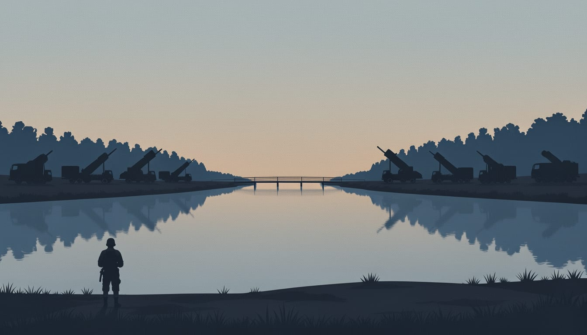

Ukrainian troops say Russia is preparing a major attack on Kherson
Soldiers report Grad launchers massed in forests east of the city and possible preparations to cross the Dnipro river. Kherson's deputy governor warns shelling could intensify from Monday.

According to Bild, Shelter and The Telegraph, Ukrainian soldiers say Russian forces are preparing a major attack on the city of Kherson in the Kherson sector, which they expect to begin as soon as the humanitarian ceasefire ends on 1 November. Using drone cameras, the soldiers report seeing KamAZ lorries carrying combat units moving non-stop, which they read as preparation for the attack, according to Bild, Shelter and The Telegraph.
Melania Trump announced on Friday 31 October that 80 hours of ceasefire were underway, with Russian and Ukrainian humanitarian teams delivering aid and preparing a civilian evacuation convoy in Oleshky. Separately, Bild reports that Russian forces appear to be building a front of roughly one hundred kilometres along the Dnipro.
The soldiers describe the forest near Radensk, east of the city, as packed with Grad rocket launchers. Bild quotes one of them saying the forest has been all but filled with the systems. They say trees there are being felled and the timber removed, and that dugouts have been reinforced. According to the soldiers, Russian drone units are also being moved closer to the Dnipro. One of them said the move may indicate an attempt to cross the river once the ceasefire ends.
Ukraine's military command has also voiced concern about how Russia is using the pause. A spokesperson for the 'South' Grouping of Forces, which covers the Kherson sector, told LIGA that Russian forces were making maximum use of the humanitarian pause for their own military purposes. A Ukrainian soldier serving there said the situation would definitely escalate once the ceasefire ends. The soldier added that he cannot rule out landing troops crossing the Dnipro River.
Kherson's deputy governor said he is very concerned that Russia will start shelling the city heavily again from Monday. "This ceasefire gave them time to bring in military equipment, resupply their forces and rotate their units," he told The Independent, adding that shelling could become much more intensive. In Russia's case, he said, the pause is a good PR opportunity, as they can use it to strengthen positions on the left bank, resupply and rotate units, so everyone benefits except Kherson.